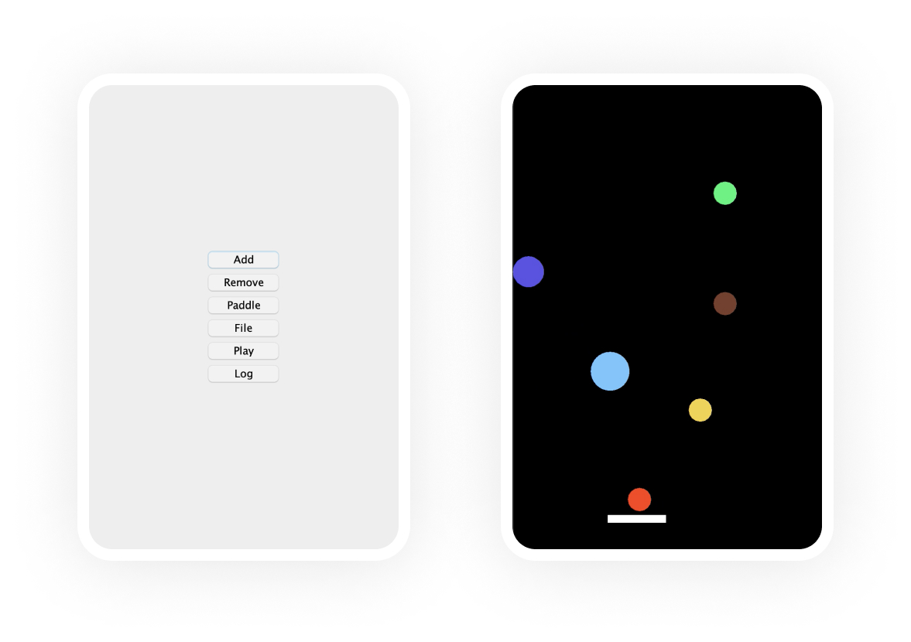
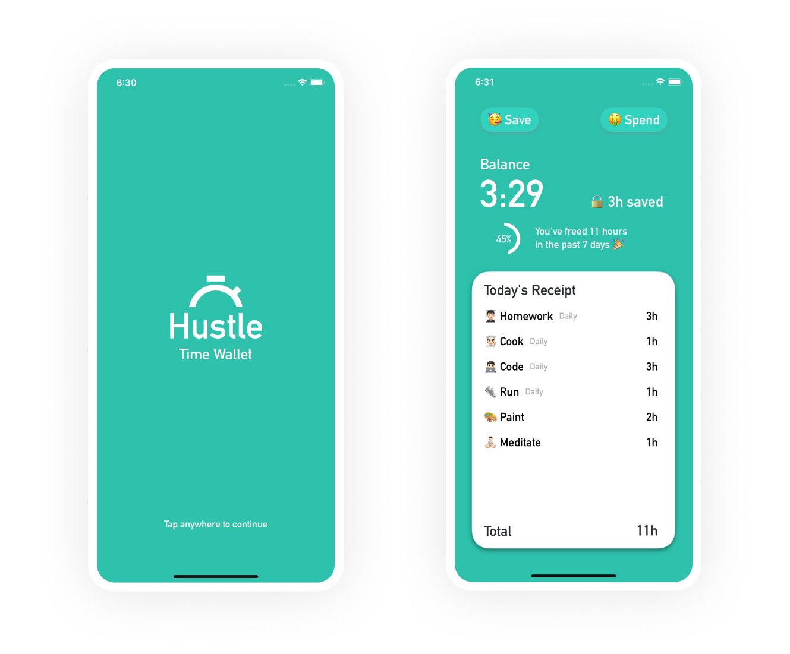
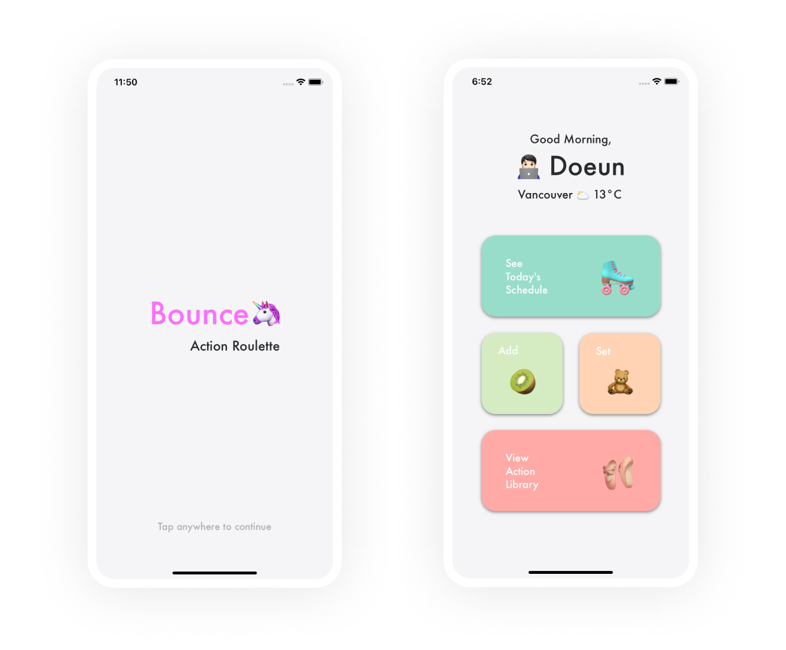
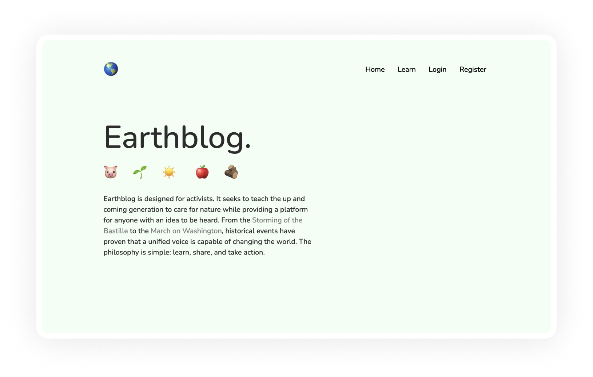

💡
I like fun apps.
Juggler
A juggling game for desktop. I made this game for my software construction course at UBC. Players can build a collection of bouncy balls of varying speed, size, and color, and have fun juggling those balls using a paddle. The game can be saved and played at another time.

Hustle
A time wallet for iOS. It's like a to-do list, but users have to budget their time the same way they would budget their money. With Hustle, time can either be saved or spent on events. The catch is that for every new day, users are only given 24 hours to mess with.

Bounce
A day randomizer for iOS. When COVID-19 first struck, I became bored of my day-to-day life. I needed an algorithm that would generate a fun and spontaneous schedule using my creative choice of activities. Bounce planned out entire days for me - including what I ate.

Earthblog
A blogging website for activists. After watching Okja, directed by Bong Joon Ho, I wanted to make something that would help raise awareness for all of the cruelty happening around the world. Earthblog is a platform for activists to share their personal stories.
